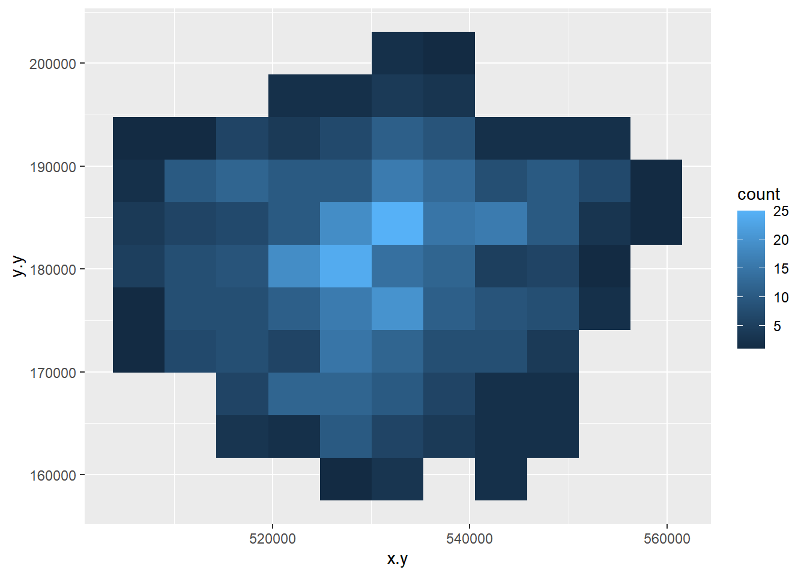
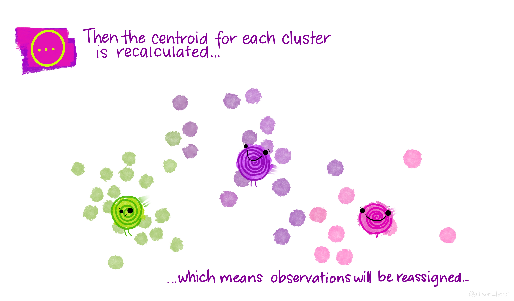

Chapter 8 Online mapping / descriptive statistics
This practical is formed of two parts, you can pick one you are more intersted in or complete both.
Part A looks at some more spatial descriptive statistics
Part B looks focuses on online mapping
8.1 Homework
Outside of our schedulded sessions you should be doing around 12 hours of extra study per week. Feel free to follow your own GIS interests, but good places to start include the following:
Assignment
From weeks 6-9, learn and practice analysis from the course and identify appropriate techniques (from wider research) that might be applicable/relevant to your data. Conduct an extensive methodological review – this could include analysis from within academic literature and/or government departments (or any reputable source).
Reading
For k-means clustering and exploratory data analysis read Chapter 12 “K-Means Clustering” from Exploratory Data Analysis with R by Peng (2016).
For interative maps re-read Chapter 8: “Making maps with R” Geocomputation with R by Lovelace, Nowosad and Muenchow (2020), especially setion 8.4.
If you want to learn more about Shiny applications then Chapter 2 “Your first Shiny app” from Mastering Shiny by Wickham.
Remember this is just a starting point, explore the reading list, practical and lecture for more ideas.
8.2 Recommended listening
Some of these practicals are long, take regular breaks and have a listen to some of our fav tunes each week.
Adam Bit different from me this week - I’m not all about drum and bass (although I mostly am). Stumbled across these recently and I should have known about them for much longer. The Joy Formidable - this is a 10th Anniversary revisit of their first EP and is ace. If you like Welsh, you’re in for a treat!
8.3 Part A spatial descriptive statistics
8.3.1 Learning objectives
By the end of this practical you should be able to:
- Create descriptive plots (histograms and boxplots) to help understand the frequency distributions of your data
- Write custom functions to process your data
- Produce a location quotient map to highlight interesting (above and below average) patterns in your data
- Write a function in R to produce a range of different maps based on user inputs
- Perform a very basic cluster analysis and output the results of a basic geodemographic classification
8.3.2 Getting Started
Before we begin this week’s practical, we need to load our packages and carry out some data preparation…
library(highcharter)
library(tidyverse)
library(downloader)
library(rgdal)
library(sf)
library(ggplot2)
library(reshape2)
library(plotly)
library(raster)
library(downloader)
library(rgdal)There is a problem with our London Wards data — we are missing some data relating to housing tenure. The housing tenure data in this file comes from the 2011 Census and visiting http://www.nomisweb.co.uk/ and interrogating Table KS402EW (the Tenure table), we can discover that data for the percentage of shared owners and those living in accommodation rent free are missing.
Rather than making you go off to Nomisweb and fetch this data, because I’m really nice, I’ve posted on GitHub a file containing this and extra categorical, ratio and geographical data that we will need to add to our existing London data file.
We can easily join this new data to our original data in R.
## [1] "C:/Users/Andy/OneDrive - University College London/Teaching/CASA0005repo"## OGR data source with driver: ESRI Shapefile
## Source: "C:\Users\Andy\OneDrive - University College London\Teaching\CASA0005repo\prac8_data\NewLondonWard.shp", layer: "NewLondonWard"
## with 625 features
## It has 76 fields
## Integer64 fields read as strings: x y# convert to sf
LondonWardsSF <- st_as_sf(LondonWards)
extradata <- read_csv("prac8_data/LondonAdditionalDataFixed.csv")## Parsed with column specification:
## cols(
## WardName = col_character(),
## WardCode = col_character(),
## Wardcode = col_character(),
## PctSharedOwnership2011 = col_double(),
## PctRentFree2011 = col_double(),
## Candidate = col_character(),
## InnerOuter = col_character(),
## x = col_double(),
## y = col_double(),
## AvgGCSE2011 = col_double(),
## UnauthAbsenceSchools11 = col_double()
## )8.3.3 Main Tasks
8.3.4 Task 1 - Descriptive Statistics
Using the lecture notes for guidance, you should generate the following graphs and descriptive statistics using standard functions and ggplot2 in R. Each element should be copied and saved to a word document or something similar:
Generate the following from your LondonWardsSF data frame (hint, use the code in the lecture notes to help you if you are unsure how to do this):
- A simple histogram for a scale/ratio variable of your choice
- A simple histogram for a scale/ratio variable of your with a different frequency bin-width
- The same histogram with vertical lines for the mean, median and mode (the mode will be the mid value for the bin with the largest count) and the inter-quartile range. hint – use summary(table$variable) to find the values if you are not sure
- The same histogram with three different kernel density smoothed frequency gradients
- A boxplot of the same variable
- A faceted grid of histograms with for every variable in your London Wards data file. In order to do this, you will need to remove Factor (non-numeric) variables from your dataset and re-shape your data using the
melt()function in thereshape2package (hint – check the help file formelt.data.frame()to understand what the code below is doing). The code below will help you:
#check which variables are numeric first
list1 <- as.data.frame(cbind(lapply(LondonWardsSF, class)))
list1 <- cbind(list1, seq.int(nrow(list1)))
#you will notice that there are some non-numeric columns, we want to exclue these, and drop the geometry
LondonSub <- LondonWardsSF[,c(1:73,83:86)]
#make sure the geometry is null or we will get errors - also create some subsets so that we can see our data better
LondonSub2 <- st_set_geometry(LondonWardsSF[,c(1:3,9:27)],NULL)
LondonSub3 <- st_set_geometry(LondonWardsSF[,c(1:3,28:50)],NULL)
LondonSub4 <- st_set_geometry(LondonWardsSF[,c(1:3,51:73,85:86)],NULL)
LondonMelt2 <- melt(LondonSub2, id.vars = 1:3)
attach(LondonMelt2)
hist2 <- ggplot(LondonMelt2, aes(x=value)) + geom_histogram(aes(y = ..density..)) + geom_density(colour="red", size=1, adjust=1)
hist2 + facet_wrap(~ variable, scales="free")
LondonMelt3 <- melt(LondonSub3, id.vars = 1:3)
attach(LondonMelt3)
hist3 <- ggplot(LondonMelt3, aes(x=value)) + geom_histogram(aes(y = ..density..)) + geom_density(colour="red", size=1, adjust=1)
hist3 + facet_wrap(~ variable, scales="free")
LondonMelt4 <- melt(LondonSub4, id.vars = 1:3)
attach(LondonMelt4)
hist4 <- ggplot(LondonMelt4, aes(x=value)) + geom_histogram(aes(y = ..density..)) + geom_density(colour="red", size=1, adjust=1)
hist4 + facet_wrap(~ variable, scales="free")
Make a note of which variables appear normally distributed and which appear to be skewed. What do the histograms for nominal and ordinal data look like?
Try performing a log10() transformation on the x variables and plotting a similar facet grid of histograms – what does this do to some of the skewed variables? For example, with the last subset:
hist5 <- ggplot(LondonMelt4, aes(x=log10(value))) + geom_histogram(aes(y = ..density..)) + stat_function(fun=dnorm, colour="red", size=1)
hist5 + facet_wrap(~ variable, scales="free")## `stat_bin()` using `bins = 30`. Pick better value with `binwidth`.## Warning: Removed 90 rows containing non-finite values (stat_bin).
- Create a 2D histogram and 2D kernel density estimate of ward centroids in London using the Eastings and Northings data in the x and y columns of your dataset. For example:


8.3.5 Extension 1
If you really want to go down the road of carrying out KDE in a range of different ways, then this is an excellent place to start: http://egallic.fr/R/sKDE/smooth-maps/kde.html — perhaps try it with some of the Blue Plaques data from previous weeks.
8.3.6 Task 2 - Introduction to functions in R
One of the great strengths of R is that is lets users define their own functions. Here we will practice writing a couple of basic functions to process some of the data we have been working with.
One of the benefits of a function is that it generalises some set of operations that can then be repeated over and again on different data.
In the lecture, it was mentioned that sometimes we should recode variables to reduce the amount of information contained in order that different tests can be carried out on the data. Here we will recode some of our scale/ratio data into some nominal/weak-ordinal data to carry out some basic analysis on.
There are various online guides which will help you a little more in writing functions, but the structure of a function in R is given below:
A function to recode data in our dataset might look like the one below:
8.3.7 What’s going on in this function?
First we initialise a new variable called
newvarand set it to = 0. We then define a new function calledrecode. This takes in 4 pieces of information: A variable (calledvariablebut I could have called it anything) and three values calledhigh,mediumandlow. It outputs a value to the new string variablenewvarbased on the values of high, medium and low that are given to the function.To create the function in R, highlight the all of the code in the function and then run the whole block (ctrl-Return in R-Studio). You will see that the function is stored in the workspace.
We can now use this function to recode any of our continuous variables into high, medium and low values based on the values we enter into the function.
We are going to recode the Average GCSE Score variable into High, Medium and Low values – High will be anything above the 3rd Quartile, Low will be anything below the 1st Quartile and Medium – anything in between. Note, if your data doesn’t have the 2013 GCSE scores but 2014, it will have different figures to these figures below and you will need to call the column by the column header you have
attach(LondonWardsSF)
#Check the name of your column, there could be a slight error and it might be called 'AvgGCSED201'
summary(AvgGCSE201) ## Min. 1st Qu. Median Mean 3rd Qu. Max.
## 245.0 332.3 343.7 345.8 358.3 409.1Create a new column in your data frame and fill it with recoded data for the Average GCSE Score in 2013. To do this, pass the AvgGCSE2013 variable to the recode() function, along with and the three values for high, medium and low. You should create a new variable called gcse_recode and use the function to fill it with values
If you wanted to be really fancy, you could try altering the function to calculate these “High”, “Medium” and “Low”
LondonWards$GCSE_recode <- recode(AvgGCSE201,409.1,358.3,332.3)
#or
LondonWardsSF$GCSE_recode <- recode(AvgGCSE201,409.1,358.3,332.3)You should also create a second re-coded variable from the unauthorised absence variable using the same function – call this variable unauth_recode and again, used the 3rd and 1st quartiles to define your high, medium and low values.
Make sure these are saved to your data frame as we will use these in next week’s practical.
On to another function. This time, we will calculate some location quotients for housing tenure in London. If you remember, a location quotient is simply the ratio of a local distribution to the ratio of a global distribution. In our case, our global distribution will be London.
#Location Quotient function 1
LQ1<-function(pctVariable){
pctVariable /mean(pctVariable)
}
#Location Quotient function 2
LQ2<-function(variable,rowtotal){
localprop<-variable/rowtotal
globalprop<-sum(variable)/sum(rowtotal)
return(localprop/globalprop)
}The two functions above calculate the same Location Quotient, but the first one works on variables which have already been converted into row percentages, the second will work on raw variables where an additional column for the row totals is stored in a separate column – e.g. “age 0-15”, “age 16-64” and “age 65 plus” all sum to the “Pop2013” column in our data London Wards data set:
## Simple feature collection with 6 features and 7 fields
## geometry type: MULTIPOLYGON
## dimension: XY
## bbox: xmin: 543417.3 ymin: 183488.5 xmax: 551943.8 ymax: 191137.3
## epsg (SRID): NA
## proj4string: +proj=tmerc +lat_0=49 +lon_0=-2 +k=0.9996012717 +x_0=400000 +y_0=-100000 +ellps=airy +towgs84=446.448,-125.157,542.06,0.1502,0.247,0.8421,-20.4894 +units=m +no_defs
## WD11CD WD11CDO WD11NM WD11NMW
## 1 E05000026 00ABFX Abbey <NA>
## 2 E05000027 00ABFY Alibon <NA>
## 3 E05000028 00ABFZ Becontree <NA>
## 4 E05000029 00ABGA Chadwell Heath <NA>
## 5 E05000030 00ABGB Eastbrook <NA>
## 6 E05000031 00ABGC Eastbury <NA>
## WardName.x WardCode.x Wardcode1
## 1 Barking and Dagenham - Abbey 00ABFX E05000026
## 2 Barking and Dagenham - Alibon 00ABFY E05000027
## 3 Barking and Dagenham - Becontree 00ABFZ E05000028
## 4 Barking and Dagenham - Chadwell Heath 00ABGA E05000029
## 5 Barking and Dagenham - Eastbrook 00ABGB E05000030
## 6 Barking and Dagenham - Eastbury 00ABGC E05000031
## geometry
## 1 MULTIPOLYGON (((543574.5 18...
## 2 MULTIPOLYGON (((549604.1 18...
## 3 MULTIPOLYGON (((547563.4 18...
## 4 MULTIPOLYGON (((548881 1910...
## 5 MULTIPOLYGON (((551552.9 18...
## 6 MULTIPOLYGON (((547271.2 18...Calculate Location Quotients for the 5 Housing tenure variables (Owner Occupied, Private Rent, Social Rent, Shared Ownership, Rent Free) in your data set using either of the functions above. Save these as 5 new variables in your dataset. *Hint – use the function to create the variable directly, for example:
8.3.8 Task 3 – Mapping Location Quotients
You should now try and create a map or series of maps of your housing tenure location quotients using tmap or ggplot – you have two options to try and accomplish this:
8.3.8.1 Easy option
Create a map by referring back earlier practicals in this course and follow the steps from there (or, indeed, use your memory)
8.3.8.2 Double hard option
If you want to blow your mind, try the function below Warning, I wrote this myself, so the code is pretty untidy and relies on the input data to already be in the form of row percentages.
The function will take in a variable, calculate a location quotient for it, map it and then save the map as a PNG to your working directory. This is the sort of thing that you could produce for the coursework if you really got stuck into learning R…
Creating the maps using it is the easy bit, but see if you can figure out from my code what’s going on and what the function is doing at each stage! Here there are functions inside a function, so it gets a little complex.
You should, however, be able to Copy the code into R, run the whole function and then test it out and produce a map like the one below:
#############################################################
##A Function for creating various location quotient maps
##
##By Adam Dennett October 2014 - updated November 2018
##
##Please note, this function requires input data to already be in ##the form of row percentages. To create the function, highlight the ##whole block of code and run it. To run the function, simply use ##LQMapper(your_dataframe)
library(rgeos)
library(ggplot2)
library(maptools)
library(sf)
library(sfc)
library(tmap)
sfdataframe <- LondonWardsSF
LQMapper<-function(sfdataframe){
print(colnames(sfdataframe))
vars<-readline("From the list above, select the variables
you want to calculate location quotients for
separated by spaces...")
# split the string at the spaces
vars<-unlist(strsplit(vars, split = "\\s"))
# now save vars as a list
vars<-as.list(vars)
print("looping to create new location quotient variables...")
attach(sfdataframe)
for(i in 1:length(vars)){
pctVariable<-vars[[i]]
colvect<-which(colnames(sfdataframe)==vars[[i]])
#this is a little function to calculate location quotients
LQ<-function(pctVariable){
pctVariable/mean(pctVariable)
}
#use LQ function here to create new variable in sfdataframe
#and save it
v <- sfdataframe[,colvect]
sfdataframe[,paste("LQ_",pctVariable, sep="")] <- LQ(v[[pctVariable]])
}
#reset i as we're going to use it again in a minute
i=0
print("now entering the plotting loop")
for(i in 1:length(vars)){
print("I'm plotting")
pctVariable<-paste("LQ_",vars[[i]],sep="")
colvect<-which(colnames(sfdataframe)==paste("LQ_",vars[[i]],sep=""))
#create the plot
LQMapperPlot <- tm_shape(sfdataframe) + tm_polygons(pctVariable,
style="jenks",
palette="Spectral",
midpoint=1,
title=pctVariable,
alpha = 0.5)
LQMapperPlot
#save the plot to a pdf and give it a name based on its variable
tmap_save(LQMapperPlot, filename=paste(pctVariable,".png",sep=""))
}
return(dataframe)
}
###################################################################8.3.9 Extension 2
Clearly there are lots of things that can be done to improve this function, it’s plotting, legend, layout etc. - feel free to experiment and customise
8.3.10 Task 4 – Creating a Basic Geodemographic Classification
As we saw in the lecture, geodemographic classifications are widely used to classify areas according to the characteristics of the population that inhabits them. All geodemographic classifications are created using cluster analysis algorithms. Many of these algorithms exist, but one of the most commonly used is k-means.

One of the pitfalls of these algorithms is that they will always find a solution, whether the variables have been selected appropriately or standardised correctly. This means that it’s very easy to create a classification which is misleading.
All of that said, it is useful to see how straightforward it is to create a classification yourself to describe some spatial data you have.
In a cluster analysis, you should select variables that are:
Ranged on the same scale
Normally distributed
Not highly correlated
To make this task easier, we will just select two variables to make our classification from. In a real geodemographic classification, hundreds of variables are often used.
LondonWardsDF <- st_set_geometry(LondonWardsSF, NULL)
#display list of variables
cbind(lapply(LondonWardsDF, class))## [,1]
## WD11CD "factor"
## WD11CDO "factor"
## WD11NM "factor"
## WD11NMW "factor"
## WardName.x "factor"
## WardCode.x "factor"
## Wardcode1 "factor"
## PopCensus2 "numeric"
## Aged0_15 "numeric"
## Aged16_64 "numeric"
## Aged65plus "numeric"
## PctAged0_1 "numeric"
## PctAged16_ "numeric"
## PctAged65p "numeric"
## MeanAge201 "numeric"
## MedianAge2 "numeric"
## AreaSqKM "numeric"
## PopDensity "numeric"
## PctBame "numeric"
## PctNotBorn "numeric"
## PctNoEngli "numeric"
## GenFertRat "numeric"
## MaleLE0509 "numeric"
## FemaleLE05 "numeric"
## RateAmbula "numeric"
## RatesAmbul "numeric"
## InEmployme "numeric"
## Employment "numeric"
## NoJobs2011 "numeric"
## EmpWkAgePo "numeric"
## RateNINoFo "numeric"
## MeanHouseP "numeric"
## NoProperti "numeric"
## NoHousehol "numeric"
## PctDetache "numeric"
## PctSemiDet "numeric"
## PctTerrace "numeric"
## PctFlatMai "numeric"
## PctOwned20 "numeric"
## PctSocialR "numeric"
## PctPrivate "numeric"
## PctSharedO "numeric"
## PctRentFre "numeric"
## PctCTaxBan "numeric"
## PctCTaxB_1 "numeric"
## PctCTaxB_2 "numeric"
## MortgageRe "numeric"
## LandlordRe "numeric"
## Incapacity "numeric"
## IncomeSupp "numeric"
## JSAClaiman "numeric"
## JSAClaim_1 "numeric"
## PctDepChil "numeric"
## PctDepCh_1 "numeric"
## PctHHNoAdu "numeric"
## PctLonePar "numeric"
## IDRankLond "numeric"
## IDPctWorst "numeric"
## AvgGCSE201 "numeric"
## UnauthAbse "numeric"
## PctWithNoQ "numeric"
## PctLev4Qua "numeric"
## CrimeRate1 "numeric"
## ViolenceRa "numeric"
## RobberyRat "numeric"
## TheftAndHa "numeric"
## CriminalDa "numeric"
## DrugsRate1 "numeric"
## Deliberate "numeric"
## PctOpenSpa "numeric"
## CarsPerHH2 "numeric"
## AvgPubTran "numeric"
## TurnoutMay "numeric"
## ID "integer"
## x.x "factor"
## y.x "factor"
## WardName.y "character"
## WardCode.y "character"
## PctSharedOwnership2011 "numeric"
## PctRentFree2011 "numeric"
## Candidate "character"
## InnerOuter "character"
## x.y "numeric"
## y.y "numeric"
## AvgGCSE2011 "numeric"
## UnauthAbsenceSchools11 "numeric"
## GCSE_recode "character"
## unauth_recode "character"
## LQOwned "numeric"
## LQSocRe "numeric"
## LQPriRe "numeric"
## LQShare "numeric"
## LQRentF "numeric"#clustering
# Create a new data frame just containing the two variables we are #interested in
mydata<-as.data.frame(LondonWardsDF[,c("PctOwned20","PctNoEngli")])
attach(mydata)## The following objects are masked from LondonWardsSF (pos = 3):
##
## PctNoEngli, PctOwned20## The following objects are masked from LondonWardsSF (pos = 4):
##
## PctNoEngli, PctOwned20#– check variable distributions first
histplot <- ggplot(data=mydata, aes(x=PctOwned20))
histplot +geom_histogram()## `stat_bin()` using `bins = 30`. Pick better value with `binwidth`.## `stat_bin()` using `bins = 30`. Pick better value with `binwidth`.Let’s make our k-means find 3 clusters with 25 iterations. The graphics below by Allison Horst will help explain the process…




Now let’s get out cluster means, plot them and then add them to our London wards…
# get cluster means
centroid<-aggregate(mydata,by=list(fit$cluster),FUN=mean)
#print the results of the cluster groupings
centroid## Group.1 PctOwned20 PctNoEngli
## 1 1 27.49037 17.034225
## 2 2 72.36387 6.379581
## 3 3 48.92551 14.697571# as we only have variable two dimensions we can plot the clusters on a graph
p <- ggplot(mydata,aes(PctOwned20, PctNoEngli))
p+geom_point(aes(colour=factor(fit$cluster)))+geom_point(data=centroid[,2:3],aes(PctOwned20, PctNoEngli), size=7, shape=18)+ theme(legend.position="none")
mydata$cluster <- fit$cluster
#add the cluster groups to the LondonWards data frame
LondonWardsSF$cluster<-mydata$cluster
#merge the cluster results into a fortified dataframe for plotting (we made LondonGeom earlier)
#London_geom<-merge(London_geom,LondonWardsDF,by.x="id", by.y="Wardcode1")
#now map our geodeomographic classification
map <- ggplot(LondonWardsSF) + geom_sf(mapping = aes(fill=cluster))+scale_fill_continuous(breaks=c(1,2,3))
map

Now of course this is just the most basic of classifications, but you can easily see how you could include more variables or different variables to create a different classification - this is perhaps something you could try.
I haven’t even gone into using different clustering algorithms, how to decide on the appropriate number of clusters, using silhoutte plots to assess the strength of the clusters or creating pen-portraits using the variable z-scores for each cluster - this is practically a whole course in its own right… or indeed a dissertation topic!
8.4 Part B Online mapping
8.4.1 Learning objectives
By the end of this practical you should be able to:
- Descrbie and explain different methods for producing online maps
- Create interative maps using RPubs, RMarkdown site generator and Shiny
- Critically appraise the appropriateness of mapping technqiues based on the dataset and purpose of the output map
8.4.2 Introduction
In this practical we are going to preliminary stages of a mini-investigation. Since 2015 the law has capped short-term lets in London at 90 nights per year. However, this is very hard to enforce due to a lack of data and extensive evidence required to prove that the limit has been exceeded. This has been recently reflected in the Housing Research Note 2020/04: Short-term and holiday letting in London by the Greater London Authority (GLA):
“there are signs that short-term letting platforms are becoming increasingly commercialised and there are concerns that removing housing supply from the market to offer it for short-term letting could be exacerbating London’s housing shortage.”
The author, Georgie Cosh, was also kind enough to share some of the code used for this report. Guess what! They used R! Have a look at their code in the R file called GLA_airbnb_analysis in the prac8_data folder.
Whilst Air bnb have implemented a system the removes listings once they have been rented for 90 days per year unless an appropraite permit is in place we want to interactively visualise the the number of air bnb lettings (and hotels for comparison) per borough as a starting point. This could then be used to undertake further investigation into boroughs with high short term lets, for example exploring other websites to see if the properties are listed and jointly exceed 90 days or optimising localised monitoring. As these rules only apply to entire homes we will only extract only these, and for monitoring purposes (e.g. random annual inspections) those are availbale for 365 days of the year.
We will now explore several ways to do this…
The report by Cosh (2020) goes a bit further than this and implements an occupancy model (based on a number of assumptions) to estimate the number of nights a Air bnb is rented out for, so check it out, perhaps an idea for your final project.
8.4.3 RPubs
One of the most straight forward publishing tools is RPubs. It takes an .Rmd and directly uploads it to rpubs.com — all files are publically available on this website.
To start with you need to make a free account. Go to: https://rpubs.com/users/new and register
Create a new project in RStudio and open a new R Markdown file (File > New File > R Markdown)
You’ll see that the file is automatically populated with some information, have a read through it then click the Knit icon …
Let’s make some changes to your
.Rmd. Delete all the text and code except from header inforamtion (that is enclosed by three dashes at the top of the file)Insert a new code chunk (go back to RMarkdown if you need a refresher)…

…Add add some code of your choice from either a previous practical or your own work. As it’s a new project you’ll have to either copy the data into your project folder or set the working directory setwd(). If it’s all online data that you’ve loaded directly from the web into R, this shouldn’t be an issue. I’m going to use the interactive map we made in practical 5 (the Advanced interactive map section)…..Here is the code i’ve put in my chunk:
library(sf)
library(tmap)
library(leafpop)
library(leaflet)
library(tmaptools)
library(tidyverse)
library(plyr)
OSM <- st_read("data/gis_osm_pois_a_free_1.shp")
Londonborough <- st_read("data/London_Borough_Excluding_MHW.shp")
Airbnb <- read_csv("data/listings.csv")
# plot xy data
Airbnb <- st_as_sf(Airbnb, coords = c("longitude", "latitude"),
crs = 4326)
# reproject
OSM <- st_transform(OSM, 27700)
Airbnb <- st_transform(Airbnb, 27700)
# we don't need to reproject Londonborough, but it
# doesn't have a CRS..you could also use set_crs
# it needs to have one for the next step
Londonborough<- st_transform(Londonborough, 27700)
#select hotels only
OSM <- OSM[OSM$fclass == 'hotel',]
# this bit of code would reduce our Airbnb data
# to entire places and available all year
Airbnb <- Airbnb[Airbnb$room_type == 'Entire home/apt' &
Airbnb$availability_365=='365',]
# make a function for the join
# functions are covered in practical 7
# but see if you can work out what is going on
# hint all you have to do is replace data1 and data2
# with the data you want to use
Joinfun <- function(data1, data2) {
# join OSM and London boroughs
joined <- st_join(data1, data2, join = st_within)
# count the number of hotels per borough
countno <- as.data.frame(count(joined$GSS_CODE))
# join the count back to the borough layer
counted <-left_join(data2, countno, by=c("GSS_CODE"="x"))
return(counted)
}
# use the function for hotels
Hotels <- Joinfun(OSM, Londonborough)
# then for airbnb
Airbnb <- Joinfun(Airbnb, Londonborough)
# now try to arrange the plots with tmap
breaks = c(0, 5, 12, 26, 57, 286)
#change the column name from freq for the legend
colnames(Hotels)[colnames(Hotels)=="freq"] <- "Accom count"
#join data
ti<-st_join(Airbnb, Hotels)
ti<-st_transform(ti,crs = 4326)
#remove the geometry for our pop up boxes to avoid
#the geometry field
ti2<-ti
st_geometry(ti2)<-NULL
popairbnb=popupTable(ti2, zcol=c("NAME.x", "GSS_CODE.x", "freq"))
pophotels=popupTable(ti2, zcol=c("NAME.x", "GSS_CODE.x", "Accom count"))
tmap_mode("view")
# set the colour palettes using our previously defined breaks
pal <- colorBin(palette = "YlOrRd", domain=ti2$freq, bins=breaks)
pal2 <- colorBin(palette = "YlOrRd", domain=ti2$`Accom count`, bins=breaks)
map<- leaflet(ti) %>%
# add basemap options
addTiles(group = "OSM (default)") %>%
addProviderTiles(providers$Stamen.Toner, group = "Toner") %>%
addProviderTiles(providers$Stamen.TonerLite, group = "Toner Lite") %>%
addProviderTiles(providers$CartoDB.Positron, group = "CartoDB")%>%
#add our polygons, linking to the tables we just made
addPolygons(color="white",
weight = 2,
opacity = 1,
dashArray = "3",
popup = popairbnb,
fillOpacity = 0.7,
fillColor = ~pal(freq),
group = "Airbnb")%>%
addPolygons(fillColor = ~pal(`Accom count`),
weight = 2,
opacity = 1,
color = "white",
dashArray = "3",
popup = pophotels,
fillOpacity = 0.7,group = "Hotels")%>%
# add a legend
addLegend(pal = pal2, values = ~`Accom count`, group = c("Airbnb","Hotel"),
position ="bottomleft") %>%
# specify layers control
addLayersControl(
baseGroups = c("OSM (default)", "Toner", "Toner Lite", "CartoDB"),
overlayGroups = c("Airbnb", "Hotels"),
options = layersControlOptions(collapsed = FALSE)
)
# plot the map
map- Add some text at the start of your
.Rmdyou can include titles and subtitle using # followed by a space, a second level subtitle would be ##, and third ###
Save the file, Knitt it to HTML, this should be default and specified in the header — enclosed by three dashes.
Once knitted you can easily publish the file to Ppubs using the Publish icon either in the viewer pane or the toolbar area (by run)
Now how about adding a few design features…i’ve changed my header section to…
---
title: "publishexample"
output:
html_document:
theme: yeti
smart: true
highlight: textmate
toc: true
number_sections: true
toc_float:
collapsed: false
smooth_scroll: true
---Knit and then publish again…you’ll notice a few aesthetic changes
To learn more about these go explore:
- https://bookdown.org/yihui/rmarkdown/html-document.html
- http://www.datadreaming.org/post/r-markdown-theme-gallery/
- https://cran.r-project.org/web/packages/prettydoc/vignettes/architect.html
And for more code chunk control..
8.4.4 RMarkdown site generator
8.4.4.1 Set the file structure
RPubs are useful but what if you wanted to make a full site with different tabs for introduction, methodology, results and recommedations…one way is to use the RMarkdown site generator hosted on GitHub
RMarkdown site generator is useful as it does not require any third-party add ons like blogdown which is reliant on the hugo site generator
To make a site you’ll need the following to be within your project:
A configuration file with the filename
_site.ymlAn
index.RmdAny other
.Rmdfiles you want to create into pages on the site
For the site to work you only require (a) and (b)….but that would be a pretty boring site…
- In your new project add two new RMarkdown files called:
_site.ymlindex.Rmd
- In the
_site.ymlremove all code and add the following
8.4.4.2 Link to GitHub
There are two ways to do this….
8.4.4.2.1 GitHub first
This is the ‘easy’ way as you woould repeat the steps in Practical 4 by firstly making a new repository on GitHub then loading a new project in RStudio, linking that to GitHub and copying all your files into your new project from the exisiting one.
8.4.4.2.2 GitHub last
So if you already have a RStudio project…like we do…we can link this to GitHub but the steps are a bit more invovled and there are several ways to acheive it — as with most things in R.
Make a Git repo in RStudio. Go to Tools > Project Options > Git/SVN and select Git under Version control system and initialize a new repository, then restart RStudio. The Git tab should appear..
Next we need to make a new repository on GitHub. Go to GitHub, login and make a new repository. Make sure that it is empty with no README.. you should have something similar to this appear:
- Clone the repository by copying the HTTPS
Make one local commit. Under the Git tab > Diff > Stage the files > Add a commit message and click commit
Now we need to connect our local repository to the GitHub one. So Under the Git tab you’ll the new brach button (two purple boxes linked to a white box)…
- Click it > Add Remote. Paste in the URL use the remote name origin and the branch name of master — which you can get from the GitHub Quick setup screen after creating your repo. Check sync the branch with the remote > click create then select overwrite
Push the files to your GitHub and they will appear on your GitHub repo
Next we need to actually build the site…there are a few ways to do this…Go to the Git tab you should see the Build tab, if you can’t then go to Tools > Project Options > Build Tools and select website under Project build tools. Now click Build Website under the build tab
Alternatively you write the following in the console
If you wanted to just build a page from your site — say if you have made a rather big site with lots of analysis use:
- Stage, commit and then push the files to your GitHub. I had some issues staging the
site_libsfolder in the Git tab. I fixed it by closing and reloading my R project then clicking the cog symbol (under Git tab) > Shell and typinggit add .If you get an error message about the index file being locked… go and delete it and try again. If you can’t delete restart the machine and try again. You will find it in the .git folder within your project. Oncegit add .runs you should see all the files staged, be able to commit and then push the changes to GitHub
Help:
- https://stackoverflow.com/questions/5834014/lf-will-be-replaced-by-crlf-in-git-what-is-that-and-is-it-important
- https://stackoverflow.com/questions/9282632/git-index-lock-file-exists-when-i-try-to-commit-but-cannot-delete-the-file
- So your ‘built’ website is up on GitHub, but you need to tell it where to build the site from…Go to your GitHub repo > Settings, scroll down to GitHub pages and select the Source as the master branch
- Click on the link that is provided where your site is published and you should have a website with two tabs. Here is what mine looks like:
For more information on hosting your code from RStudio on GitHub check out the book Happy Git and GitHub for the useR
My RMarkdown site can be found here, but note that i’ve added a Shiny tab…we’ll cover Shiny next…
8.4.5 Shiny
Shiny is an R package that lets you build interactive web apps, host them online and embed them within RMarkdown documents… have a look at some examples
To build a shiny you require three main ‘items’ or blocks of code:
Code that specfies the user interface or
uiCode that defines the server logic to plot variables (server function)
A call to the
ShinyAppfunction
These could either be within one large .R file or over several .R files.
Start a new R Project > New or existing directory > Shiny Web Application
Within your new R Project folder make a new folder called data and copy in the data we have been using
The main purpose of this part of the practical is to show you how to use Shiny so we won’t make a Git repository.
- Go File > New File > Shiny Web App
Here you can select either a single file or multiple file format, originally Shiny needed multiple files to run however in the latest version you can have this all in one script, i’ve just used one script here.
- If you click Run App on either the
app.Rthe example Shiny will load.
Now let’s make one with our data…
8.4.5.1 Data preparation
- The first part is easy and is based on analysis we have already compelted…we need to produce a
sfmultipolygon layer containing the number of hotels and airbnbs per London borough through….
# load packages
library(sf)
library(tmap)
library(leafpop)
library(leaflet)
library(tmaptools)
library(tidyverse)
library(plyr)
library(classInt)
# read in OSM
OSM <- st_read("data/gis_osm_pois_a_free_1.shp")
# read in Londonboroughs
Londonborough <- st_read("data/London_Borough_Excluding_MHW.shp")
# read in Airbnb
Airbnb <- read_csv("data/listings.csv")
# plot xy data
Airbnb <- st_as_sf(Airbnb, coords = c("longitude", "latitude"),
crs = 4326)
# reproject
OSM <- st_transform(OSM, 27700)
Airbnb <- st_transform(Airbnb, 27700)
# we don't need to reproject Londonborough, but it
# doesn't have a CRS..you could also use set_crs
# it needs to have one for the next step
Londonborough<- st_transform(Londonborough, 27700)
#select hotels only
OSM <- OSM[OSM$fclass == 'hotel',]
Airbnb <- Airbnb[Airbnb$room_type == 'Entire home/apt' &
Airbnb$availability_365=='365',]
# make a function for the join
# functions are covered in practical 7
# but see if you can work out what is going on
# hint all you have to do is replace data1 and data2
# with the data you want to use
Joinfun <- function(data1, data2) {
# join OSM and London boroughs
joined <- st_join(data1, data2, join = st_within)
# count the number of hotels per borough
countno <- as.data.frame(count(joined$GSS_CODE))
# join the count back to the borough layer
counted <-left_join(data2, countno, by=c("GSS_CODE"="x"))
return(counted)
}
# use the function for hotels
Hotels <- Joinfun(OSM, Londonborough)
# then for airbnb
Airbnb <- Joinfun(Airbnb, Londonborough)
# now try to arrange the plots with tmap
breaks = c(0, 5, 12, 26, 57, 286)
#change the column name from freq for the legend
colnames(Hotels)[colnames(Hotels)=="freq"] <- "Accom count"
#join data
ti<-st_join(Airbnb, Hotels, join=st_equals)
ti<-st_transform(ti,crs = 4326)
# change the names to match those in later selection
names(ti)[names(ti) == "freq"] <- "Airbnb"
names(ti)[names(ti) == "Accom count"] <- "Hotel"
# combine all the data (accomodation count) so we
# can make an appropraite colour range
accomall<-c(ti$`Hotel`,ti$Airbnb)Now we are going to take our data to make an interative map with drop down selection boxes and a ‘slider’. We want to be able to:
- select either Hotel or Airbnb data to map
- be able to select a colour scheme
- filter the boroughs shown using a slider
- select what kind of intervals we can use to style the data
- have a legend that automatically updates based on the selections (e.g. slider, colour scheme and interval style)
There are plenty of options available in Shiny to make cool interactive features, for more information check out:
- https://shiny.rstudio.com/tutorial/written-tutorial/lesson1/
- https://rstudio.github.io/leaflet/shiny.html
- Load the packages we’ll need here and do some final data manipulation. Just add this right below the code above, i seperate it using a line of ##########################
################################################## final data manipulation
library(shiny)
library(leaflet)
library(RColorBrewer)
# we will use this for our dropdown
choice=c("Hotel", "Airbnb")
# remove any NAs from our data and replace with 0
#as a function later on doesn't play ball with them
ti$Hotel[is.na(ti$Hotel)] <- 0
ti$Airbnb[is.na(ti$Airbnb)] <- 08.4.5.2 User interface
- Ok, first let’s set up the user interface or
ui. I’ve commented the code to descrbie what each bit does.
################################################## ui
# we'll use bootstrappage - a UI definition that can be passed to Shiny
ui <- bootstrapPage(
tags$style(type = "text/css", "html, body {width:100%;height:100%}"),
# we're using leaflet and have title the outputID map
# this will call it from our server function below
leafletOutput("map", width = "100%", height = "100%"),
# this sets our input panel placement
absolutePanel(top = 10, right = 10,
#
#our ID will be called later to make it interactive
selectInput(inputId = "Accom",
# label the drop down
label = "Accom type",
# what choices will there be
# this uses our choices list from
# earlier
choices = choice,
# Here False means you can only select
# one option
multiple = FALSE
),
#gimme some colour options from colourbrewer
# here the inoutID is colourbrewerpalette
# the lavel is Color Scheme
# rownames provides our choices
selectInput("colourbrewerpalette", "Color Scheme",
rownames(subset(brewer.pal.info, category %in% c("seq",
"div")))
),
# add a slider with the ID slide and label
# accomodation count
sliderInput("slide", "Accomodation count",
# min slider value
min(accomall, na.rm=TRUE),
# max slider value
max(accomall, na.rm = TRUE),
# range
value = range(accomall, na.rm = TRUE),
# increments
step = 10,
sep = ""
),
# add a selection for type of data break
# ID of cassIntStyle and title
# Interval Style
selectInput("classIntStyle", "Interval Style",
c("Jenks Natural Breaks" = "jenks",
"Quantile" = "quantile",
"Equal Interval" = "equal",
"Pretty" = "pretty"))
)
)8.4.5.3 Server function
- It’s a good idea to actuallly see what this produces…at the bottom of the code add an empty server function and then generate the Shiny application BE SURE TO COPY ALL OF BRACKETS
####################################### server
server <- function(input, output, session) {
}
shinyApp(ui, server)Click Run App and the following should appear

- Now we need to add some more code to our server function to let us link the user interface to the data. Change the server function to:
####################################### server
server <- function(input, output, session) {
output$map <- renderLeaflet({
# Use leaflet() here, and only include aspects of the map that
# won't need to change dynamically (at least, not unless the
# entire map is being torn down and recreated).
# note we're using the ID of map calling back to leafletOutput
# in the user interface
leaflet(ti) %>% addTiles() %>% setView(-0.0881798, 51.48932, zoom = 10)
})
# obsever creates a reactive observer to then re-execute any changes
observe({
# filter the data of ti based on the range provided by the slider
(ti2<-({ti[ti[[input$Accom]] >= input$slide[1] & ti[[input$Accom]] <=
input$slide[2],]}))
# here we are changing the class breaks using the selection of either
# airbnb or hotel input$Accom uses what the user selects from
# the drop down box
breaks<-classIntervals(ti2[[input$Accom]], n=5, style=input$classIntStyle)
breaks <- breaks$brks
# make the color palette using ti (all of the data)
pal <- colorBin(palette = input$colourbrewerpalette,
domain = ti2[[input$Accom]],
bins = breaks
)
# map our filtered data from the slider (ti2)
leafletProxy("map", data=ti2) %>%
clearShapes() %>%
addPolygons(color="white",
weight = 2,
opacity = 1,
dashArray = "3",
# add a popup of borough name and count based on
# the drop down of accomodation (hotel or airbnb)
# remember the ID we gave to that was Accom
popup = paste(ti2$NAME.y,"... ",ti2[[input$Accom]]),
fillOpacity = 0.5,
fillColor = ~pal(ti2[[input$Accom]])
)
})
observe({
# call the filter again for this observer
(ti2<-({ti[ti[[input$Accom]] >= input$slide[1] & ti[[input$Accom]] <=
input$slide[2],]}))
# this observer follows the same pattern
# but adds a legend
breaks<-classIntervals(ti2[[input$Accom]], n=5, style=input$classIntStyle)
breaks <- breaks$brks
pal <- colorBin(palette = input$colourbrewerpalette,
domain = ti2[[input$Accom]],
#create bins using the breaks object from earlier
bins = breaks
)
# here is the Legend
proxy <- leafletProxy("map", data = ti2)
proxy %>% clearControls() %>%
addLegend("bottomright",
pal= pal,
values = ~ti2[[input$Accom]],
title = input$Accom,
labFormat = labelFormat(prefix = ""),
opacity = 1
)
})
}- Don’t forget to call the Shinyapp at the end
8.4.5.4 Publish Shiny app
Now we will publish our Shiny app on the internet. There are a few ways to do this, but we’ll use Shinyapps.io which let’s us upload our app straight from our R session to a sever hosted by RStudio.
Go to: https://www.shinyapps.io/ and make a free account
Back in RStudio click on Publish > Publish Application

- You now need to connect RStudio to the Shinyapps.io account you just made. Follow the instructions provided in this box:
- You’ll find the tokens under Account > Tokens. Make sure you click show secret then copy the code into the box in the figure above. You can now publish your Shinyapp, this might take a bit of time but you can see progress updates in the Deploy tab. Once completed the application will load…

Mine is here: https://amaclachlan.shinyapps.io/test/
8.4.5.5 Incoproate into RMarkdown site
- To include our Shiny application into our RMarkdown site just add the following code in a code chunk:
Here is mine in the RMarkdown site project — i’ve put it in a new .Rmd

If you copy this make sure you also update the _site.yml to link it…

- Remember to update your site you’ll need to build the website, commit to Git and push to GitHub
8.4.5.6 Additional example
Last year Adam created a similar (but slightly different) Shiny, check it out here
His code can be found here
Notice how Adam separated his code into different files…the latest update of Shiny means we no longer have to do this, we can just use one script like we did. However, if you have a very large and complicated project this is still possible, you can then call other scripts like Adam has using…
To do it like this the scrips must be in the same project!
Want to see something really cool i came across….how about controlling the map elements with your voice using Shiny…https://yihui.shinyapps.io/voice/
8.4.5.7 More Shiny
For Shiny help explore Mastering Shiny and Interactive web-based data visualization with R, plotly, and shiny, specifcally the section on Advanced applications.
For advancements / large scale projects with Shiny explore Building Big Shiny Apps - A Workflow
8.4.6 How to lie with maps
If you play around with the Shiny app, changing the colour scheme, interval style and accomodation count using the slider you’ll notice that you can actually almost change what the maps shows. For example, if you wanted to hide the distribution of Airbnb accomodation over London you could select any color scheme, use the full range of accomodation count and then select the pretty interval style to give some like…

It’s therefore important to provide reasoning for the choices you make in analysis and when creating mapped outputs. This especially true with the advent of GitHub and journals publishing data and code meaning it is almost impossible to present false representations of analysis.
8.4.7 Warning
Whilst it might seem tempting to use the most advanced interactive maps for your the assignments within this module and course it is important to think and reflect upon the appropriateness of the mapped output. You should ask yourself the following questions:
- What am i trying to show with this map
- Will interative elements aid this in anyway or just confuse users
- Is there a more concise way to display this data
- Do i need all this information — is it all relevant to the message you are trying to portray with the map
In all these examples i’ve used the same data (Hotels and Airbnbs in London boroughs), however as i’m only showing two datasets could this be represeted without all this complexity?— in this case the answer really depends on the audience you are tyring to get something across to. For example, for use in an academic journal, as there are only two data sets being mapped a static map like we produced in the Map making practical would be more appropraite. However an interative map (similar to what we have produced) might be more useful for incorpation on a website…
The take home message from this is to critically think about the best way to map and disseminate your data/results.
8.4.8 Advanced online publishing
Already familiar with RPubs, RMarkdown site generator or Shiny? Try and and produce an online document using either: bookdown, flexdashboard, blogdown or shinydashboard. These are listed in order of difficutly from my experience.
Hint this document is made using bookdown, so checkout my GitHub for how i set it up
- Bookdown: https://bookdown.org/yihui/bookdown/, minimal bookdown example: https://github.com/rstudio/bookdown-demo
If you want to extend bookdown or automate the process of building, have a look at continuous integration using github actions
Flexdashboard: https://rmarkdown.rstudio.com/flexdashboard/
Blogdown: https://bookdown.org/yihui/blogdown/
Interactive Shiny dashboards: https://rstudio.github.io/shinydashboard/get_started.html
8.4.9 Feedback
Was anything that we explained unclear this week or was something really clear…let us know here. It’s anonymous and we’ll use the responses to clear any issues up in the future / adapt the material.